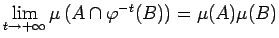
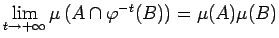
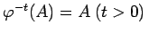
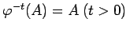

Inhalt Index DeskTop Bronstein

 Dynamische Systeme und Chaos Quantitative Beschreibung von Attraktoren Wahrscheinlichkeitsmaße auf Attraktoren Elemente der Ergodentheorie
Dynamische Systeme und Chaos Quantitative Beschreibung von Attraktoren Wahrscheinlichkeitsmaße auf Attraktoren Elemente der Ergodentheorie


Ein dynamisches System  auf
auf  mit invariantem Wahrscheinlichkeitsmaß
mit invariantem Wahrscheinlichkeitsmaß  heißt mischend, wenn  für beliebige BOREL-Mengen gilt. Für ein mischendes System hängt also das Maß der Menge aller Punkte, die bei t=0 in A und für große t in B liegen, nur vom Produkt ab.
heißt mischend, wenn  für beliebige BOREL-Mengen gilt. Für ein mischendes System hängt also das Maß der Menge aller Punkte, die bei t=0 in A und für große t in B liegen, nur vom Produkt ab.
Ein mischendes System ist auch ergodisch: Seien  ein mischendes System und A eine BOREL-Menge mit . Dann gilt und ist 0 oder
ein mischendes System und A eine BOREL-Menge mit . Dann gilt und ist 0 oder  .
.
Ein Fluß  von (17.1) ist genau dann mischend, wenn für beliebige quadratisch integrierbare Funktionen die Beziehung
von (17.1) ist genau dann mischend, wenn für beliebige quadratisch integrierbare Funktionen die Beziehung
| (17.33) |
gilt. Dabei bezeichnen und  die räumlichen Mittel, die durch die zeitlichen Mittel ersetzt werden.
die räumlichen Mittel, die durch die zeitlichen Mittel ersetzt werden.
| Beispiel |
|
Die Modulo-Abbildung (17.28) ist mischend. Die Rotationsabbildung (17.31) ist bezüglich des Wahrscheinlichkeitsmaßes nicht mischend. |